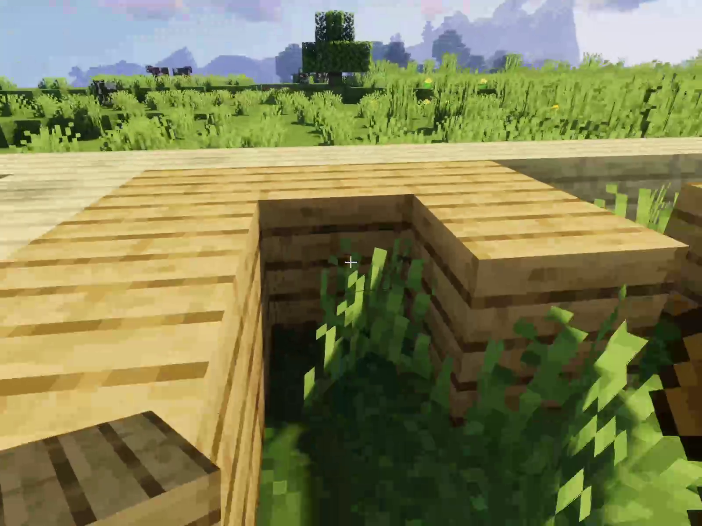

About this Mod
This Minecraft mod aims to move the ingame HUD out of the way whenever possible. Whenever an element updates (i.e., health changes, you swap items, you look at something, etc.), the respective item will show up. However, once you've been able to see the information, it will fade away and allow you to enjoy your game without the clutter of unneeded HUD elements.
The following elements will only show up under certain conditions:
- The health and armor bars will only show up when your health changes (i.e. after taking damage), when your health is low or when holding food.
- The hunger bar will only show up when your hunger level (not your saturation) changes, you are hungry, or when holding food.
- The experience bar and level will only show upon gaining experience.
- The health of your mount (i.e. your horse) will only show when its health changes.
- The horse jump bar will only show when you are getting ready to jump.
- The hotbar will only show when an item you are holding changes or you change which slot is selected.
- The crosshair will only show when you are looking at something or you are using a bow, crossbow, shield, or trident or holding a throwable item.
- The hands will show only when you use an item or are holding/using one of the above specified items, or a map.
- Potions will only show up when just applied or about to run out.

An update on the future of this mod.
Hello, everyone.
I've recently taken on a new job, and, due to the demands of a full-time developer job, I will no longer be able to maintain this project. I've had a lot of fun with it, but continuing it for the future is simply unfeasible.
With that said, I am willing to transfer the project, copyright and all, to someone else who is willing to maintain it. If you happen to be interested, email me at markil3@tutanota.com and we can discuss it.
Once a transfer is complete, I will post an update here and on PlanetMinecraft page.
I thank you all for the support you've shown in this.
May God bless you all,
Markil 3